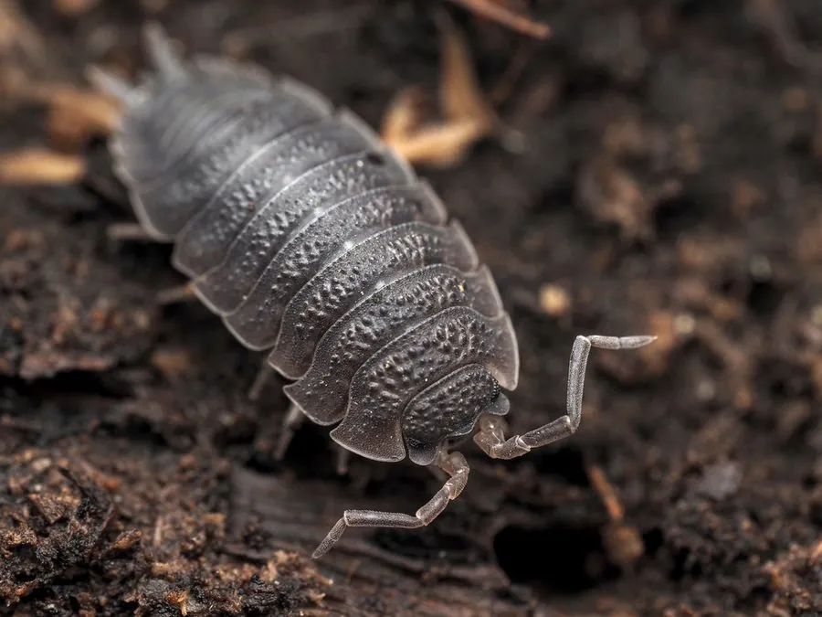

甲壳动物 · 动物界
普通鼠妇 Porcellio scaber

生活在潮湿落叶和石块下的陆生等足类，雌虫用育囊孵卵，不咬人也不传播疾病，是常见的土壤小动物。
- 分类
- 门节肢动物门纲软甲纲目等足目科鼠妇科属鼠妇属
- 栖息环境
- 潮湿的落叶层、石块下、腐木与花盆底部
- 地理分布
- 原产欧洲，现随人类活动扩散至世界各地
- 保护级别
- 暂无评估
物种志
普通鼠妇体长约 1–1.5 cm，身体椭圆形、背腹扁平，呈灰褐色或暗灰色，体表有粗糙的颗粒，分为头部、胸部和腹部，有 7 对足，触角两对。
它生活在潮湿地表、落叶层、石块下和腐木中，昼伏夜出，取食腐烂的植物、真菌和有机碎屑，是土壤分解者之一。普通鼠妇属于甲壳动物中的等足目，是少数完全适应陆地生活的甲壳类，但仍需要湿润环境，否则会脱水死亡。雌虫腹部下方有育囊，把受精卵和早期幼体带在身边保护。它原产欧洲，随人类活动扩散到世界各地，对人类无害，既不会咬人，也不会传播疾病，在花盆和花园里遇到不必惊慌。它们有时会成群聚集在潮湿的墙角，是花园里常见的小动物。
形态与习性
- 食性取食腐烂植物、真菌和有机碎屑
- 体长约 1–1.5 cm，有 7 对足
- 呼吸用腹部的伪气管呼吸，需要湿润环境
- 繁殖雌虫用腹下育囊孵卵并保护幼体
- 习性昼伏夜出，喜欢潮湿阴暗处
- 生态作用土壤分解者，对人体无害
趣味知识
- 鼠妇是甲壳动物，和虾蟹是近亲，并不是昆虫。
- 它用腹部特化的伪气管呼吸，所以必须待在潮湿的地方。
- 鼠妇对人类无害，不会咬人，也不会传播疾病。